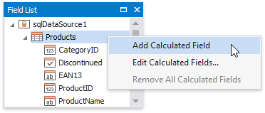
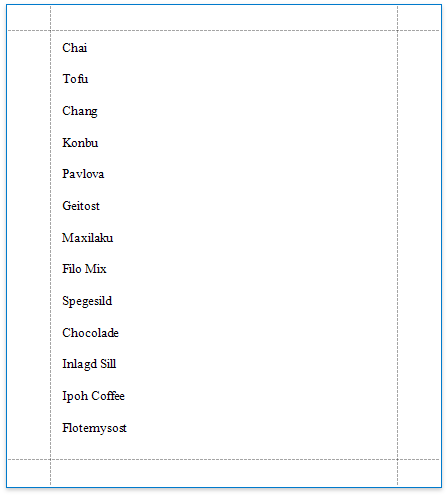

Sort Data by a Custom Field
This tutorial illustrates how to sort a report against a custom criteria, in particular, sort data by the number of characters in the data field value.
Create a new or open an existing data-bound report.
You cannot apply grouping unless your report is bound to a data source.
Create a calculated field. Switch to the Field List, right-click any item inside the data source and select Add Calculated Field.

Select the calculated field, and in the Property Grid, click the Expression property's ellipsis button.
In the invoked Expression Editor, select the required date-time function and define the data field's name in [square brackets]. For example, use the Len([ProductName]) function to return the number of characters extracted from the ProductName data field.
Click OK to close the editor and save the changes.
In the Group and Sort panel, click Add a Sort and select the calculated field from the invoked drop-down menu.
The Sort Order drop-down list allows you to define the sort order within the group (ascending or descending).
Drag the corresponding field from the Field List onto the report area and switch to Print Preview to see the result.
